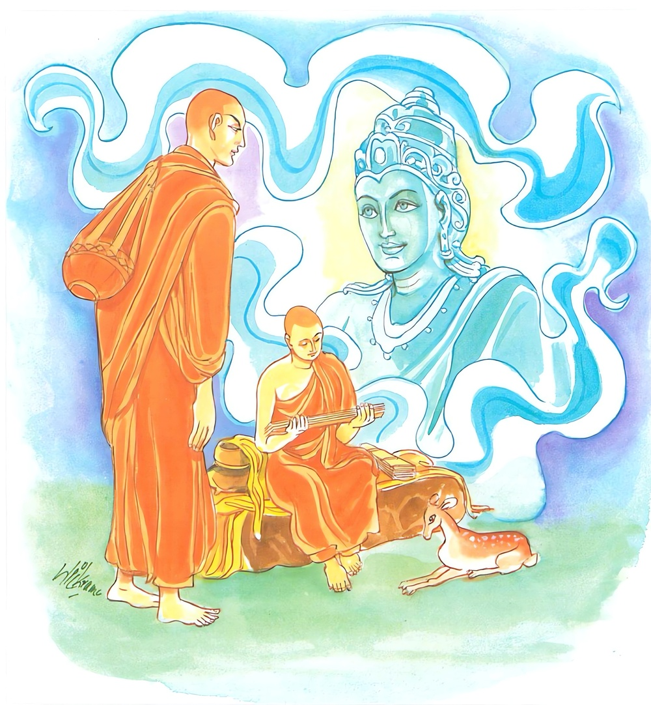

13-2 පිඬු සිඟීම
මෙම කතාව ධම්මපද අටුවාවෙන් ද කියවන්න.
උත්තිට්ඨෙ නප්පමජ්ජෙය්ය ධම්මං සුචරිතං චරෙ
ධම්මචාරී සුඛං සෙති අස්මිං ලොකෙ පරම්හි ච.
ගෙපිළිවෙළින් පිඬු සිඟා ලැබිය යුතු කෙණෙසි අහරෙහි නො පමා වන්නේ ය. භික්ෂූචර්ය්යධර්මය සකසා පුරුදු කරන්නේ ය. භික්ෂාචර්ය්යධර්මය අනුව හැසිරෙන මහණ තෙම මෙ ලොවෙහි ද පරලොවෙහි ද සුවසේ වෙසෙයි.
ධම්මං චරෙ සුචරිතං න නං දුච්චරිතං චරෙ
ධම්මචාරී සුඛං සෙති අස්මිං ලොකෙ පරම්හි ච.
(භික්ෂාචර්ය) ධර්මය (අනෙස්නෙන් තොර වැ පිඬුසිඟීමෙන්) මනා කොට පුරන්නේ ය. එය (වේසියගෝචරාදි අගෝචරයෙහි හැසිරීම් වශයෙන්) නපුරු කොට නො පුරන්නේ ය. භික්ෂාචර්ය්යධර්මය මනා ව පුරනා මහණ තෙම මෙ ලොවෙහි ද පරලොවෙහි ද සිවු ඉරියවුහි ම සුව සේ වෙසෙයි.

ස්වාමිදරු වූ සම්මා සම්බුදු රජානන් වහන්සේ බුදුබවට පැමිණ හා පුරා කියා දවසක කිඹුල්වතට වැඩි සේක. ඒ පළමු ගමනේ දී උන්වහන්සේගේ නෑයෝ එක්ව පෙර ගමන් කළහ. එහි නිග්රෝධාරාමයට වැඩි බුදුරජානන් වහන්සේ නෑයන්ගේ මන් බිඳිනු පිණිස අහස රුවන් සක්මනක් මවා සක්මන් කරමින් ධර්ම දේශනා කළ සේක. එබණ අසා පහන් වූ නෑයෝ සුදොවුන් මහරජුන් පෙරටු කොට මානය හැර දමා උන්වහන්සේ වැඳ සිටියාහ. ඒ ඤාතිසමාගමයෙහි පොකුරු වැසි වට. රැස්ව සිටි මිනිස්සු එය ඉදිරියට ගෙණ තැන තැන කතා කරන්නට වූහ. බුදුරජානන් වහන්සේ “මහණෙනි! මේ පොකුරු වැසි වැටීම පුදුමයක් නො වේ, පොකුරු වැසි වැටුනේ අද විතරක් නො වේ, පෙර මා වෙසතුරු රජව උපන් අවදියේත් මෙලෙස ම පොකුරු වැසි වැටුනේ ය” යි වෙසතුරුදා වදාළ සේක. එදා එහි බණ ඇසූ හැම නෑ කෙනෙක් ම පසුදා දානය පිණිස උන්වහන්සේට ආරාධනා නො කොට ගෙවලට ගියහ. ශුද්ධෝදන මහරජ තෙමේත් “මා පුතු මා වෙත නො අවුත් කොහි යන්නේ දැ” යි සිතා දානය පිණිස ආරාධනා නො කොට ම ගොස් විසිදහසක් පමණ භික්ෂූන් වහන්සේලාට සෑහෙන පමණින් කැඳ අවුලුපත් පිළියෙල කරවා හිඳිනට අසුන් ද පැණවී ය.
පසුදා පිඬු සිඟා වඩනා බුදුරජණන් වහන්සේ “පෙර බුදුවරු කොතැනකත් නො ගොස් නෑ ගෙට ම පිඬු සිඟා ගියෝ ද, නැත, කිසිත් වෙනසක් නො කොට උස් පහත් කම් නො සලකා ගෙපිළිවෙළින් වැඩියෝ දැ” යි බලා වදාරණ සේක් ගෙපිළිවෙළින් වැඩිය බව දැන කිඹුල්වතට ඇතුල්ව ඉදිරියට හමු වූ පළමු ගෙය පටන් පිඬු සිඟා වැඩි සේක. එවේලෙහි පහය උඩුමාලෙහි හුන් රාහුලමාතාවෝ බුදුරජුන් පිඬු සිඟා වඩිනා බව දැක ඒ බව සුදොවුන් මහරජුට දන්වා ලූහ. රජ තෙමේ ත්රස්ත ව හුන් තැනින් නැගිට ගිණ තුබූ වස්ත්රය මග දිගට උන උනා අඳිමින් වහා ගොස් බුදුරජුන් වැඳ “පුත! ඇයි මෙහෙම කරහු? කුමක් නිසා මා නසහු? නරකද කළහු? පුත ඔබ වහන්සේ මේ සිඟා කෑමෙන් කළහු, මට මදිකමක්, රන්දෝලාවලින් මෙනුවර පුරා ගමන් බිමන් කළ ඔබ වහන්සේට කෙළිදෙළෙන් කල් යැවූ ඔබ වහන්සේට මෙසේ කරනු වටී ද? කුමක් හෙයින් මට ලජ්ජා උපදවහු? ඔබ වහන්සේට අහර සපයනු මට නො කළැකි දැ?” යි කඳුලු වගුරවමින් අසා සිටියේය. “මහරජ! දනු, මම ඔබ කිසිදාකත් ලජ්ජාවට පත් නො කරමි, පිඩුසිඟීම අපගේ පරපුරේ සිරිත ය, එහෙයින් මාගේ මේ පිඬු සීඟීම ගැන කාටත් කිසිත් කියන්නට ඉඩ නැත, මෙය ඔබට කණස්සලු වීමට කරුණෙක් නො වේ, ලජ්ජා ඇත්තකු වන්නට කරුණෙක් නො වේ, නැසුනෙමි යි සිතන්නට කරුණෙක් නො වේ, එහෙයින් මාගේ මේ පිඩුසිඟීමට සතුටු වන්නැ” යි බුදුරජානන් වහන්සේ වදාළවිට, රජ තෙමේ නැවැතත් “පුත! ඇයි එහෙම කියනු? සිඟීමෙන් දිවි යවන පරපුරෙක් ද මාගේ පරපුරැ?” යි ඇසී ය. “මහරජ! මම දනිමි ඔබගේ පරපුර සිඟීමෙන් දිවි ගලවන පරපුරක් නො වන බව, පිඬුසිඟීම මාගේ පරපුරේ සිරිත, මාගේ වංශය ජිනවංශය යි, ඔබගේ වංශය ගෞතමවංශය යි, ගෞතමගෝත්රිකයන් පිඩු සිඟා නො යන බව මම දනිමි, මාගේ වංශයේ ඇත්තෝ කවදාත් පිඩු සිඟා ගියෝ ය, පිඩුසිඟීමෙන් ම ජීවත් වූවෝ ය, ජීවත් වන්නෝ ය. ජිනවංශිකයන්ගේ ජීවිතයෙහි ඔද වැඩි බව, ආලෝක ය පිඩු සිඟා වැළදීම නිසා ම වන්නේ ය” යි වදාළ බුදුරජානන් වහන්සේ මේ ධර්ම දේශනාව කළ සේක.
උත්තිට්ඨෙ නප්පමජ්ජෙය්ය ධම්මං සුචරිතං චරෙ,
ධම්මචාරි සුඛං සෙති අස්මිං ලොකෙ පරම්හි ච.
.
ධම්මං චරෙ සුචරිතං න නං දුච්චරිතං චරෙ,
ධම්මචාරි සුඛං සෙති අස්මිං ලොකෙ පරම්හි ච.
පිඩු සිඟීමෙහි නො පමා වන්නේ ය. පිඬු සිඟා යාම සකස් කොට කරන්නේ ය. පිඬු සිඟා හැසිරෙණ සුලු මහණ තෙමේ මේ ලෙව්හි හා පරලෙව්හි සුවසේ හොවියි.
උත්තිට්ඨෙ නප්පමජ්ජෙය්ය = පිඬු සිඟීමෙහි නො පමා වන්නේ ය
පිණ්ඩචාරික වත නො පිරිහෙළා ගෙපිළිවෙළ නො ඉක්මවා දොර දොර සිට සිඟා ලැබිය යුතු අහරෙහි නො පමා වන්නේ ය.
යම් මහණෙක් පිණ්ඩචාරිකවත පිරිහෙළා පිණී පිණී බොජුන් සොයමින් හැසිරේ නම්, ඒ මහණ පිඬු සිඟීමෙහි පමා වූවෙක් වේ. ගෙපිළිවෙළින් පිඬු සිඟා යන මහණ නො පමා වූවෙක් වේ.
පිඬු සිඟා නො ගොස් කෑම් බීම් ලඟට ලැබෙනතුරු වෙහෙර රැඳී එගැණ පතමින් සිටීම මහණකමට නො ගැළපෙන්නේ ය. එහෙයින් ඒ ඒ කුලයන්හි උස් පහත්කම් නො සලකා ගෙන් ගෙට පිළිවෙළින් ගොස් අහරෙහි නො පමා විය යුතු ය.
පිඩු සිඟීමෙහි යෙදී වසන මහණ තෙමේ බුදුරජුන් වැණූ සිවු පසය ලබන්නේ, කම්මැලිකම දුරලන්නේ, පිරිසිදු දිවි ඇත්තෙක් වන්නේ, අනුනට යටත් නො වන්නේ, අනුනට අනුග්රහ කරන්නේ, මානය නසන්නේ, රස තෘෂ්ණාව වළකන්නේ, අප්පිච්ඡතාදී ගුණයනට අනුලොම් වන්නේ, පිළිවෙත් පුරන්නේ වේ.
ධම්මං සුචරිතං චරෙ = සිඬු සිඟීම සකස් කොට කරන්නේ ය.
එක්විසි වැදෑරුම් අනෙසනයන්ගෙන් දුරුව පිඬු සිඟීමැ යි කියූ සුචරිතධර්මයෙහි හැසිරිය යුතු ය. එක්විසි අනෙසනය දුශ්ශීලඅලජ්ජින්ගේ ජීවනෝපායය වේ. බුදුරජුන් විසින් ඒ නින්දා කරණ ලද්දේ ය. මෙහි. ‘ධම්ම’ යනුත් පිඬු සිඟීම කියන්නට යෙදුනේ ය.
ධම්මචාරී = පිඬු සිඟා යන මහණ තෙමේ.
ධම්මචාරී නම් පිඬු සිඟා යෑම ස්වභාව කොට ගත් මහණ තෙමේ ය. ධර්මය ලෙසින් විනය ලෙසින් පිඬු සිඟා යන මහණ ය.
අසමිං ලොකෙ පරම්හි ච = මෙලොව හා පරලොව.
සුඛං සෙති = සුවසේ හොවියි. නිදයි.
මේ මහණ මෙලොව හා පරලොව සැපසේ නිදන්නේ ය. මේ මහණ “ අන්තමිදං භික්ඛවෙ ජිවිකානං යදිදං පිණ්ඩොල්යං” යන සුගතෝවාදය සිහියට ගෙණ, තමසිත නැසුනු මන් ඇත්තක් කොට ගෙපිළිවෙළින්, හික්මවා ගත් ඇස් කන් නාස් ඈ ඇතිව. කුකුස් නැතිව පිඬු සිඟා යන්නේ ලැබූ අහරින් තුටු වන්නේ ය. ලැබූ අහරට වඩා රසැති අහරක් නො පතන්නේ ය. මෙසේ වූයේ ම දෙලොව සුවසේ හෝනේ ය. මේ මෙයූ කී සැටි.
“නීචමනං කරිත්වාන සපදානං කුලාකුලං,
පිණ්ඩිකාය චරෙ භික්ඛු ගුත්තද්වාරො සුසංවුතො,
ලුඛෙනපි ච සන්තුස්සෙ නාඤ්ඤං පත්ථෙ රසං බහුං” යි.
මේ මහණහු එක්විසි අනෙසන මුළුමනින් හැරිය යුතු ය. ආජීවහේතුවෙන් බුද්ධපතිකුට්ඨ වූ කිසිත් නො කළ යුතු ය. ගෙදර දොරෙහි උස් පහත්කම් නො සැලකිය යුතු ය. කුල ගොත්ර නො තැකිය යුතුය, ශ්රමණප්රතිපත්තිය ම සැලකිය යුතු ය. ආර්ය්යවංශ ප්රතිපදාවෙහි පිහිටා ගත යුතු ය. මෙ තෙමේය ධම්මචාරී. මෙ තෙමේ ශාසනය කරන්නේ ය. බුද්ධාදී ආර්ය්යයන්ගේ ප්රවේණිය රක්නේ ය. සදේවක ලෝකයාගේ වන්දනමානනාදියට තැන් වන්නේ ය. ලෝකයට නය නැත්තේ ය. අනුන් යටතෙහි නො වන්නේ ය. හැම තන්හි විශාරද වන්නේ ය.
මෙතෙමේ, මෙලොව හැම ඉරියව්වෙහි, පරලොව හැම ඉරියව්වෙහි අකම්පිත වේ. භය රහිත වේ. එහෙයින් දෙලොවෙහි ම සුවසේ වසන්නේ ය.
ධම්මං චරෙ සුචරිතං = පිඬු සිඟීම වරද නැති ලෙසින් කරන්නේ ය.
පිඬු සිඟීම වරද නැති ලෙසින් කිරීම නම් රසයෙහි නො බැඳී ගෙදර දොර උස් පහත්කම් නො සලකා මනා පැවැත්මෙන් යුතුව මන් බිඳ හැර ගෙපිළිවෙළින් පිඬු සිඟා යෑම ය.
න නං දුච්චරිතං චරෙ = එය නො මනා කොට නො කරන්නේ ය.
වෙසඟනන් වසන තැන්, මළ සැමියන් ඇති තැන්, බැහැර ගිය සැමියන් ඇති තැන් ඈ නො සුදුසු තන්හි හැසිර පිඬු සිඟන්නේ නපුරු කොට සිඟන්නේ ය. නපුරු කොට පුරන්නේය. මේ කියූ නො සුදුසු තැන් හැර යුතු තන්හි සිඟන්නේ මනාකොට සිඟන්නේ ය. මනාකොට පුරන්නේ ය.
ධම්මචාරී = පිඬු සිඟන මහණ තෙමේ.
අස්මිං ලොකෙ පරම්හි ච = මේ ලොව හා පරලොව
සුඛං සෙති = සුවසේ හොවියි. නිදයි. වසයි.
ධර්මදේශනාවගේ අවසානයෙහි ශුද්ධෝදන මහ රජතෙමේ සෝවන් වූයේ ය. පැමිණ සිටියවුනට ද ධර්මදේශනාව සාර්ත්ථක වූ ය.
ශුද්ධෝදන වස්තුව නිමි.